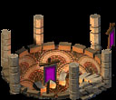

Arcane Catacombs
|  |
Housing extensive arcane libraries, perfect mosaic summoning circles, and
heavily shielded spell testing chambers, Arcane Catacombs provide
all that is needed for Cabalists and Warlocks to practice their trade.
Although much spell research is done in the Dark Elven Conclave, particularly
dangerous or sophisticated research done by Warlocks and Cabalists is done in the Catacombs.
|
Catacombs also serve as a neutral ground between Warlocks antagonistic towards each other, as they are bound by their own magic to not strike out at one another directly while in a guild building. Of course, spell testing 'accidents' do happen from time to time. Although the Catacombs may look like a dungeon from the surface, it is actually quite lavishly decorated inside. This is primarily at the insistance of the Warlocks, as Cabalists care little for material things and luxury, forever contemplating their bizzare magics.
|
The Catacombs not only allows these powerful spellcasters to train their
more adept apprentices to mastery, but also allows them to prepare known
spells for field use. Without Arcane Catacombs to prepare, spells like Cataclysm and Summon Djinn are simply too difficult to cast.
|
Strifeshadow, Ethermoon Entertainment and their respective logos are trademarks of Martin Snyder